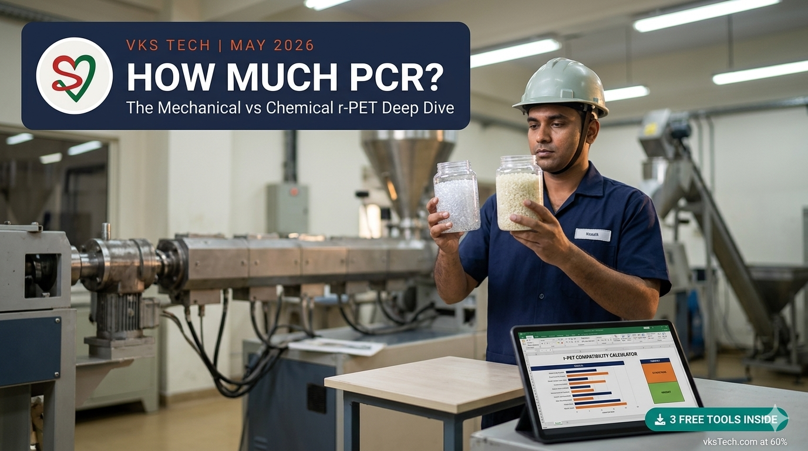
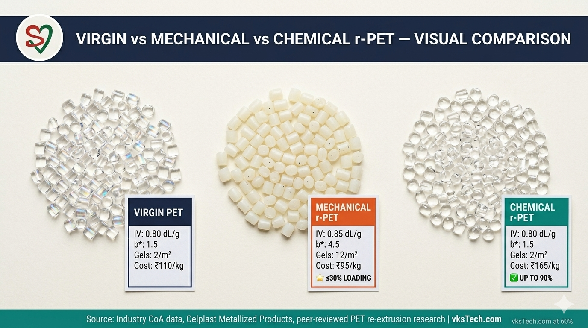
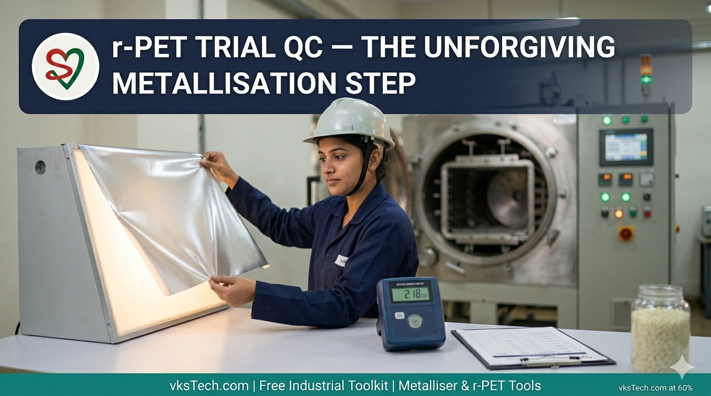
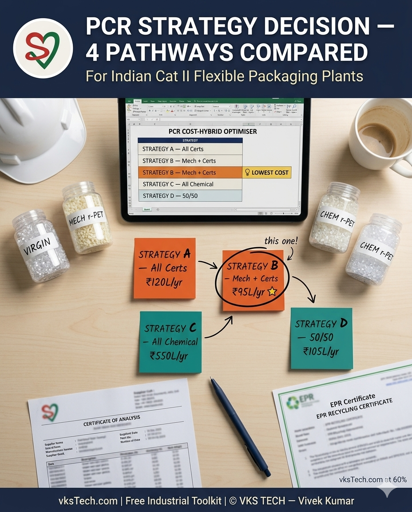

📖 16-min read | The technical reality of running recycled PET in your metalliser line | Includes 3 free downloadable bilingual Excel formats | Published May 2026
If you read Blog 41, you know the regulation: under the Plastic Waste Management (Amendment) Rules, 2026, every Indian flexible packaging plant must hit specific recycled-content targets — 10% for Cat II flexible films in 2025-26, climbing to 20% from 2027-28. You also know the basic toolkit: register on the CPCB portal, classify your SKUs, track tonnage, file half-yearly returns. What Blog 41 deliberately did NOT cover was the question that has every metalliser plant manager staring at the ceiling at 2 AM: can my line actually run recycled PET, and if so, how much?
This blog answers that question. We will cover what mechanically recycled r-PET physically does to a film when you blend it into your extruder, why the industry hits a hard wall at 30% loading for mechanical r-PET, what changes with chemical r-PET (depolymerised back to monomer), and how all of this affects the most sensitive process in flexible packaging — vacuum metallisation. By the end you will know what blends are safe for your line, what blends will turn your trial roll into ₹2 lakh of scrap, and what economic mix of physical recycled content vs purchased EPR certificates makes financial sense for your plant. Sixteen minutes. Three free downloadable tools at the bottom — a compatibility calculator, a step-by-step trial protocol, and a hybrid cost optimiser.

Mechanical recycling is the cheap, well-established path. PET bottles are collected, sorted, washed, ground into flake, dried, then pelletised. The output looks similar to virgin PET resin pellets but is fundamentally different at the molecular level — and those differences propagate through every step of your process.
The first thing that changes is intrinsic viscosity. Virgin film-grade PET runs 0.78 to 0.85 dL/g IV. Bottle-grade r-PET starts higher — typically 0.80 to 0.95 dL/g IV — because bottle resin needs higher molecular weight for stretch-blow moulding. But here is the catch: each time PET goes through melt processing, it suffers a measurable IV drop from chain scission caused by trace moisture, oxygen, and thermal stress. Bottle r-PET has already been through one melt cycle (the bottle blow), and you are about to put it through a second (your extruder). The result: blended r-PET extruded film typically runs 0.04 to 0.06 dL/g lower IV than virgin film at 30% loading. Lower IV means lower melt strength, more sensitivity to draw ratio adjustments, and a tighter operating window on the BOPET line.
The second change is colour. Virgin PET is water-clear with a b* of around 1.5. Bottle r-PET carries small amounts of antimony degradation products, oxidised end-groups, and trace contaminants that survive the wash step. Each percent of mechanical r-PET added pushes b* up by approximately 0.1 units. At 10% loading, b* rises to ~2.5 — imperceptible to the human eye. At 20%, ~3.5 — visible side-by-side against virgin reference. At 30%, ~4.5 — visible standalone, clearly yellowish to a trained eye. Celplast Metallized Products and other industry sources explain that "when PET film manufacturers are using mechanically recycled PET resin, they cannot go much above 30% content by weight before this resin starts to negatively impact the mechanical and visual properties of the film." For most converters, this is the operational ceiling.
The third change is gel count. Gels are small unmelted or thermally-degraded lumps that show up as fish-eyes under transmitted light. Virgin PET runs roughly 2 gels per square metre at the extruder die — already not zero, due to trace particulates and equipment wear. Bottle r-PET adds gels from three sources: residual high-molecular-weight chains that take longer to melt, trace contamination from incomplete washing, and thermal degradation products from the bottle's previous melt history. The gel count rises roughly linearly with loading at about 0.33 gels/m² per 1% loading. At 30% mechanical r-PET, expect gel count near 12 gels/m² — manageable for opaque or printed films, marginal for transparent applications, and a quality reject for premium pharmaceutical or food-display packaging.
The fourth change is your extruder behaviour. Higher IV means higher melt viscosity, which means higher die pressure, higher screw torque, and longer residence time at melt temperature. Operators see this as a 5-8°C melt temperature rise at 30% loading just to maintain stable extrusion, plus die pressure 8-15% higher than virgin baseline. Line speed typically drops 3-7% to maintain gauge consistency — partly because of viscosity, partly because the operator has reduced confidence margin and wants to keep things stable.

Now we get to the part that matters most for VKS Tech readers. Suppose you have successfully extruded a 12µ PET film with 25% mechanical r-PET. Tensile is acceptable, b* is borderline at 4.0, gel count is around 10 gels/m². The film exits the BOPET line, gets slit into jumbo rolls, and arrives at the metalliser. What happens?
The metallisation process puts every gram of the film through a vacuum chamber at 10⁻⁴ mbar, accelerates aluminium vapour from heated boats at 1500°C onto a chill drum at -25°C, and deposits a 25-40 nm aluminium layer in less than half a second of contact time. Three things make this unforgiving for blended r-PET films.
First, vacuum sensitivity. Mechanical r-PET carries trace moisture and trapped volatiles that virgin PET does not. Even after standard drying, residual contamination outgases under vacuum, increasing the chamber pressure during runs and forcing the operator to slow down or pause. A virgin PET line might cycle in 90 minutes; a 25% r-PET blend can extend cycle time to 105-115 minutes due to slower vacuum stabilisation.
Second, gel impact on aluminium uniformity. A gel in a film is a region of different density and surface chemistry from the surrounding bulk. When aluminium vapour deposits, it preferentially condenses on smoother, more uniform surfaces. Gels create local optical density variation — bright spots where aluminium is thinner, dark spots where it is thicker. For thin films (8-10µ) targeting OD 2.5+ for high-barrier applications, even 5 gels/m² can drop your release rate by 15-20% as QC rejects rolls for OD non-uniformity. For thicker films (15-23µ) at OD 2.0-2.2 for general lamination, you can get away with more.
Third, the b* yellowness problem becomes a barrier-claim problem. Many barrier specifications in flexible packaging are quoted with reference to the unmetallised carrier film. If your unmetallised PET has shifted from b* 1.5 to b* 4.0 due to r-PET loading, your customer's QC team will see a different baseline colour even before metallisation. Some brand customers explicitly reject films above b* 3.0 for transparent windows in stand-up pouches — the slight yellow cast looks "off" against printed graphics.
The good news from controlled industry trials is that "PCR-PET films give similar performance to virgin PET films, they can be metallized and converted using traditional techniques. The barrier and metal adhesion of metallized PCR-PET films are similar to what can be achieved using a traditional PET film" — provided you stay within the loading limits. The numbers below are conservative starting points; your line will need a trial to confirm.
Chemical recycling is fundamentally different from mechanical recycling. Instead of melting and re-pelletising the polymer, chemical recyclers depolymerise PET back to its building-block monomers — purified terephthalic acid (PTA) and mono-ethylene glycol (MEG) — then re-polymerise those monomers into fresh PET. The output is molecularly indistinguishable from virgin PET. No IV drop. No b* yellowness. No gels from previous melt history. No trapped contaminants.
The two dominant chemical recycling routes are glycolysis (using ethylene glycol to break the polymer chains, producing bis-hydroxyethyl terephthalate or BHET, then re-polymerised) and methanolysis (using methanol, producing dimethyl terephthalate or DMT, the cleanest output). Glycolysis is the more economical route and is now operating at commercial scale in India, Europe, and North America. Eastman, IndoRama, Carbios, and several other producers offer chemically-recycled PET resins certified by ISCC PLUS or equivalent traceability schemes.
The result for film converters: "Film suppliers using chemically recycled r-PET resin offer films with 70% to 90% PCR content" — far above what mechanical can deliver. Some producers are pushing toward 100%. From a film and metalliser perspective, chemical r-PET behaves like virgin: same extruder window, same OD targets, same line speeds, same QC release rates.
The catch is cost. Chemical recycling involves multiple energy-intensive steps (depolymerisation reactor, monomer purification, re-polymerisation, solid-state polymerisation), all of which add operating cost. Industry estimates put chemical r-PET resin pricing at roughly 1.5× to 2× virgin PET resin pricing, depending on supply, supplier, and the specific process. For a converter running 1,000 tonnes/year of Cat II PET film at a 10% PCR target, that translates to about 100 tonnes of recycled content. If virgin PET costs ₹110/kg and chemical r-PET costs ₹165/kg, the incremental cost is 100 × 1000 × ₹55 = ₹55 lakh per year just for the chemical r-PET premium. Compare that to mechanical r-PET at ₹95/kg (saving ₹15/kg vs virgin) or EPR certificates at ₹10-15/kg, and the economic picture clarifies quickly.

Every plant manager will face the same decision in 2025-26: how to actually meet the PCR target. There is no single right answer; the optimal strategy depends on your product mix, your line capabilities, your customer requirements, and your tolerance for regulatory risk. Here is the framework I would walk through.
Step 1: Segment your product portfolio. Not all SKUs deserve the same approach. A premium pharma blister film at 8µ has very different tolerance for r-PET than a 23µ general-lamination metallised film going into a snack package. Group your SKUs into three buckets: (a) premium / thin / transparent / FSSAI-critical — chemical r-PET only, or virgin + certificates; (b) mid-tier / standard barrier / printed laminate — up to 30% mechanical r-PET viable; (c) commodity / opaque / non-food / thicker gauges — mechanical r-PET tolerable to higher loadings, certificates also fine.
Step 2: Assess line capability through a small-batch trial. Do not jump from zero to 25% mechanical r-PET on a Monday morning production run. Run a controlled trial — a step-up from 5% to 10% to 15% to your target loading — over a single shift, with QC sampling at each step. The Trial Protocol Sheet (Format 2 below) walks through this 15-step procedure with pass criteria for IV, b*, gel count, tensile, and metalliser OD. Quarantine all trial output until QC clears. Most plants discover their actual ceiling is 5-10% lower than the published 30% — line condition, screw design, drying capability, and supplier consistency all narrow the window.
Step 3: Run the cost-vs-PCR optimiser. The Hybrid Cost Optimiser (Format 3 below) compares four strategies side-by-side: all certificates, max mechanical + certificates, all chemical r-PET, and 50/50 mechanical/certificates. Inputs are your annual production tonnage, current PCR target, prevailing prices, and your line's max physical r-PET feasible percentage. The output is your lowest-cost compliant strategy in rupee lakhs per year. For most Indian Cat II flexible converters in 2025-26 at 10% target, the math currently favours a hybrid — some mechanical r-PET (cheaper than virgin) plus certificates to close the gap. If certificate prices rise (which CPCB has signalled is likely), the math shifts toward more physical content.
Step 4: Plan for the 2027-28 step-up. The Cat II target jumps from 10% to 20% in 2027-28. If you are at 10% mechanical r-PET today, you cannot simply double to 20% mechanical — you will hit the gel and IV ceiling. Either you invest in chemical r-PET supply contracts now (12-24 month lead time on capacity reservation), or you scale up certificate procurement, or both. Plants that wait until April 2027 to plan for the step-up will be price-takers in a tightening certificate market.
Step 5: Document everything for the audit trail. CPCB inspections will increasingly scrutinise the difference between claimed and actual PCR content. Every supplier CoA, every trial result, every batch traceable from r-PET pellet to metallised roll to invoice should be in your Master Tracker (covered in Blog 41's Format 1). The audit-proofing is not optional.
1. Skipping the supplier CoA verification. Many plants accept r-PET pellets and run them straight to the extruder, assuming "the supplier sent us r-PET, it must be r-PET." Bottle-grade r-PET varies wildly between suppliers — IV ranges from 0.75 to 0.95 dL/g, b* from 1.5 to 4.5, moisture from 50 ppm to 500 ppm. Without a CoA verification step, you cannot tell whether your trial failure is the r-PET batch or your line. Always cross-check supplier CoA against virgin PET CoA before each trial.
2. Inadequate drying. r-PET is hygroscopic and has typically been stored longer than virgin pellets. The standard 4-hour dry at 160°C that works for virgin PET is often insufficient for r-PET — you may need 6 hours and a deeper dewpoint (-40°C minimum) to hit moisture below 50 ppm. Wet r-PET in the extruder produces hydrolytic chain scission, which dramatically accelerates IV drop and gel formation. Half of "r-PET trial failures" are actually just a drying problem.
3. Running the trial on a Friday afternoon. The first r-PET trial should be on a slow shift with senior process engineers present. Friday evening trials, when operators are tired and supervisors have left, produce more failures than they solve. Schedule your r-PET trial when you have time to ramp slowly, sample carefully, and call the trial off if something looks wrong. The roll you save by stopping at 15% loading is worth more than the data you would have gathered at 25%.
All three tools are fully editable Excel files (.xlsx) with English and Hindi side-by-side. All formulas pre-built and verified. Full VKS Tech branding on every page so your team and your suppliers know where the tool came from.
📚 Related reads on this site: Blog #41 covers the EPR regulatory framework that makes PCR mandatory in the first place — the 4 plastic categories, 90-day compliance roadmap, and 3 free formats for tracking and filing. Blog #31 compares AlOx (transparent oxide barrier) vs traditional metallisation through the EPR lens — relevant if you are considering whether to shift product mix toward AlOx, which sidesteps some r-PET trade-offs by enabling mono-material recyclable structures. The full free toolkit lives at vkstech.com/#tools.
The numerical predictions in the Compatibility Calculator are based on industry-published data and peer-reviewed research, but every metalliser line is different. Use the predictions as starting estimates for planning, NOT as quality release criteria. Always run a controlled line trial before committing to a production recipe. Always verify supplier CoA against virgin PET baseline. Final decisions on r-PET loading must be based on your line's trial results, your customer's QC requirements, and your regulatory framework. This blog is technical guidance, not legal advice.
Running an r-PET trial and seeing unexpected gels? Trying to source FSSAI-approved chemical r-PET? Negotiating with a supplier whose CoA looks suspect? Drop your question in the comments at the bottom of this page — I respond to every thoughtful question, plant engineer to plant engineer.
📌 What's next. With PCR strategy locked, the next blog covers the topic that comes up every time a metalliser plant manager talks to a brand customer: how does mono-material PE flexible packaging compare to traditional metallised PET? Mono-PE structures are the global push for recyclability — but PE behaves nothing like PET on a metalliser line. That is Blog 43.
📖 16-min read | आपकी metalliser line में recycled PET चलाने की technical सच्चाई | 3 Free Downloadable Bilingual Excel Formats शामिल | May 2026 में published
अगर आपने Blog 41 पढ़ा है, तो आपको regulation पता है: Plastic Waste Management (Amendment) Rules, 2026 के तहत हर Indian flexible packaging plant को specific recycled-content targets hit करने हैं — Cat II flexible films के लिए 2025-26 में 10%, 2027-28 से 20% तक चढ़ता है। आपको basic toolkit भी पता है: CPCB portal पर register करें, SKUs classify करें, tonnage track करें, अर्धवार्षिक returns file करें। पर Blog 41 ने जानबूझकर वो सवाल cover नहीं किया जो हर metalliser plant manager को रात 2 बजे जगाए रखता है: क्या मेरी line वास्तव में recycled PET चला सकती है, और अगर हाँ, तो कितना?
यह blog उसी सवाल का जवाब देता है। हम cover करेंगे कि mechanically recycled r-PET physically film को क्या करता है जब आप extruder में blend करते हैं, क्यों industry mechanical r-PET के लिए 30% loading पर hard wall hit करती है, chemical r-PET (monomer में depolymerised) के साथ क्या बदलता है, और यह सब flexible packaging की सबसे sensitive process — vacuum metallisation — को कैसे प्रभावित करता है। अंत तक आपको पता होगा कि कौन से blends आपकी line के लिए safe हैं, कौन से blends आपकी trial roll को ₹2 लाख का scrap बना देंगे, और physical recycled content vs खरीदे गए EPR certificates का कौन सा economic mix आपके plant के लिए financially सही है। सोलह मिनट। नीचे तीन free downloadable tools — एक compatibility calculator, एक step-by-step trial protocol, और एक hybrid cost optimiser।
Mechanical recycling सस्ता, well-established रास्ता है। PET bottles collect होती हैं, sort होती हैं, धुलती हैं, flake में grind होती हैं, dry होती हैं, फिर pelletise होती हैं। Output virgin PET resin pellets जैसा दिखता है पर molecular level पर मूल रूप से अलग है — और वो अंतर आपकी process के हर step में propagate होते हैं।
पहली चीज़ जो बदलती है वो है intrinsic viscosity। Virgin film-grade PET 0.78 से 0.85 dL/g IV पर चलता है। Bottle-grade r-PET ज़्यादा शुरू होता है — typically 0.80 से 0.95 dL/g IV — क्योंकि bottle resin को stretch-blow moulding के लिए ज़्यादा molecular weight चाहिए। पर catch यह है: हर बार जब PET melt processing से गुज़रता है, उसमें trace moisture, oxygen, और thermal stress से chain scission होता है जिससे measurable IV drop होता है। Bottle r-PET पहले से एक melt cycle (bottle blow) से गुज़रा है, और आप उसे दूसरे (आपका extruder) में डालने वाले हैं। नतीजा: blended r-PET extruded film 30% loading पर typically virgin film से 0.04 से 0.06 dL/g कम IV पर चलता है। कम IV का मतलब कम melt strength, draw ratio adjustments के प्रति ज़्यादा sensitivity, और BOPET line पर tighter operating window।
दूसरा बदलाव colour है। Virgin PET water-clear है b* ~1.5 के साथ। Bottle r-PET में antimony degradation products, oxidised end-groups, और trace contaminants की छोटी मात्रा है जो wash step से बच जाती हैं। हर percent mechanical r-PET जोड़ने पर b* लगभग 0.1 units बढ़ता है। 10% loading पर, b* ~2.5 तक चढ़ता है — मानवीय आँख के लिए imperceptible। 20% पर, ~3.5 — virgin reference के साथ side-by-side दिखता है। 30% पर, ~4.5 — standalone दिखता है, trained eye को साफ़ yellowish। Celplast Metallized Products और अन्य industry sources समझाते हैं कि "जब PET film manufacturers mechanically recycled PET resin use करते हैं, वे 30% content by weight से ज़्यादा नहीं जा सकते इससे पहले कि यह resin film की mechanical और visual properties पर negative impact डालने लगे।" ज़्यादातर converters के लिए, यह operational ceiling है।
तीसरा बदलाव gel count है। Gels छोटे unmelted या thermally-degraded lumps हैं जो transmitted light में fish-eyes के रूप में दिखते हैं। Virgin PET extruder die पर लगभग 2 gels per square metre पर चलता है — पहले से शून्य नहीं, trace particulates और equipment wear के कारण। Bottle r-PET तीन sources से gels जोड़ता है: residual high-molecular-weight chains जो melt होने में ज़्यादा समय लेते हैं, incomplete washing से trace contamination, और bottle की पिछली melt history से thermal degradation products। Gel count loading के साथ लगभग linearly लगभग 0.33 gels/m² per 1% loading बढ़ता है। 30% mechanical r-PET पर, gel count लगभग 12 gels/m² के क़रीब होगी — opaque या printed films के लिए manageable, transparent applications के लिए marginal, और premium pharmaceutical या food-display packaging के लिए quality reject।
चौथा बदलाव आपके extruder behaviour में है। ज़्यादा IV का मतलब ज़्यादा melt viscosity, जिसका मतलब ज़्यादा die pressure, ज़्यादा screw torque, और melt temperature पर ज़्यादा residence time। Operators इसे 30% loading पर 5-8°C melt temperature rise के रूप में देखते हैं केवल stable extrusion maintain करने के लिए, साथ ही die pressure virgin baseline से 8-15% ज़्यादा। Line speed typically 3-7% गिरती है gauge consistency maintain करने के लिए — कुछ viscosity के कारण, कुछ इसलिए कि operator ने confidence margin कम कर दिया है और चीज़ें stable रखना चाहता है।
अब हम उस हिस्से तक आते हैं जो VKS Tech readers के लिए सबसे ज़्यादा matter करता है। मान लीजिए आपने 25% mechanical r-PET के साथ 12µ PET film successfully extrude की है। Tensile acceptable है, b* 4.0 पर borderline है, gel count 10 gels/m² के क़रीब है। Film BOPET line से निकलती है, jumbo rolls में slit होती है, और metalliser पर पहुँचती है। क्या होता है?
Metallisation process film के हर gram को 10⁻⁴ mbar पर vacuum chamber से गुज़ारता है, 1500°C पर heated boats से aluminium vapour को -25°C पर chill drum पर accelerate करता है, और आधे second से कम contact time में 25-40 nm aluminium layer deposit करता है। तीन चीज़ें इसे blended r-PET films के लिए unforgiving बनाती हैं।
पहले, vacuum sensitivity। Mechanical r-PET trace moisture और trapped volatiles carry करता है जो virgin PET नहीं करता। Standard drying के बाद भी, residual contamination vacuum के नीचे outgases करता है, runs के दौरान chamber pressure बढ़ाता है और operator को slow down या pause करने को मजबूर करता है। एक virgin PET line 90 minutes में cycle कर सकती है; एक 25% r-PET blend slower vacuum stabilisation के कारण cycle time को 105-115 minutes तक बढ़ा सकता है।
दूसरे, aluminium uniformity पर gel impact। Film में gel surrounding bulk से अलग density और surface chemistry का region है। जब aluminium vapour deposit होता है, यह smoother, ज़्यादा uniform surfaces पर preferentially condense होता है। Gels local optical density variation बनाते हैं — bright spots जहाँ aluminium thinner है, dark spots जहाँ thicker। Thin films (8-10µ) के लिए OD 2.5+ targeting high-barrier applications के लिए, 5 gels/m² भी आपकी release rate 15-20% गिरा सकती है क्योंकि QC OD non-uniformity के लिए rolls reject करता है। Thicker films (15-23µ) के लिए OD 2.0-2.2 पर general lamination के लिए, आप ज़्यादा से बच सकते हैं।
तीसरे, b* yellowness problem barrier-claim problem बन जाती है। Flexible packaging में कई barrier specifications unmetallised carrier film के reference में quote होती हैं। अगर आपका unmetallised PET r-PET loading के कारण b* 1.5 से b* 4.0 पर shift हुआ है, आपके customer का QC team metallisation से पहले भी अलग baseline colour देखेगा। कुछ brand customers explicitly stand-up pouches में transparent windows के लिए b* 3.0 से ऊपर films reject करते हैं — slight yellow cast printed graphics के against "off" दिखता है।
Controlled industry trials से अच्छी खबर यह है कि "PCR-PET films virgin PET films के समान performance देती हैं, इन्हें traditional techniques से metallize और convert किया जा सकता है। Metallized PCR-PET films का barrier और metal adhesion वही है जो traditional PET film से प्राप्त किया जा सकता है" — provided आप loading limits के अंदर रहें। नीचे के numbers conservative starting points हैं; आपकी line को confirm करने के लिए trial चाहिए।
Chemical recycling mechanical recycling से मूल रूप से अलग है। Polymer को melt और re-pelletise करने के बजाय, chemical recyclers PET को उसके building-block monomers में depolymerise करते हैं — purified terephthalic acid (PTA) और mono-ethylene glycol (MEG) — फिर उन monomers को fresh PET में re-polymerise करते हैं। Output virgin PET से molecularly indistinguishable है। कोई IV drop नहीं। कोई b* yellowness नहीं। पिछले melt history से कोई gels नहीं। कोई trapped contaminants नहीं।
दो dominant chemical recycling routes हैं glycolysis (ethylene glycol use करके polymer chains तोड़ना, bis-hydroxyethyl terephthalate या BHET produce करना, फिर re-polymerised) और methanolysis (methanol use करके, dimethyl terephthalate या DMT produce करना, सबसे clean output)। Glycolysis ज़्यादा economical route है और अब India, Europe, और North America में commercial scale पर चल रहा है। Eastman, IndoRama, Carbios, और कई अन्य producers ISCC PLUS या equivalent traceability schemes द्वारा certified chemically-recycled PET resins offer करते हैं।
Film converters के लिए नतीजा: "Chemically recycled r-PET resin use करने वाले Film suppliers 70% से 90% PCR content वाली films offer करते हैं" — mechanical जो deliver कर सकता है उससे कहीं ज़्यादा। कुछ producers 100% की ओर push कर रहे हैं। Film और metalliser perspective से, chemical r-PET virgin जैसा behave करता है: वही extruder window, वही OD targets, वही line speeds, वही QC release rates।
Catch cost है। Chemical recycling में कई energy-intensive steps शामिल हैं (depolymerisation reactor, monomer purification, re-polymerisation, solid-state polymerisation), जो सब operating cost जोड़ते हैं। Industry estimates chemical r-PET resin pricing को virgin PET resin pricing के लगभग 1.5× से 2× पर रखते हैं, supply, supplier, और specific process के आधार पर। Cat II PET film का 1,000 tonnes/year run करने वाले converter के लिए 10% PCR target पर, यह लगभग 100 tonnes recycled content में बदलता है। अगर virgin PET की cost ₹110/kg है और chemical r-PET की cost ₹165/kg है, incremental cost 100 × 1000 × ₹55 = केवल chemical r-PET premium के लिए ₹55 लाख per year है। इसे mechanical r-PET ₹95/kg (virgin से ₹15/kg बचत) या EPR certificates ₹10-15/kg पर तुलना करें, और economic picture जल्दी clarify हो जाती है।
हर plant manager को 2025-26 में वही decision face करना होगा: PCR target को actually कैसे meet करें। कोई single right answer नहीं है; optimal strategy आपके product mix, line capabilities, customer requirements, और regulatory risk के लिए tolerance पर depend करती है। यहाँ framework है जिसके through मैं walk करूँगा।
Step 1: अपना product portfolio segment करें। सभी SKUs एक ही approach के योग्य नहीं हैं। 8µ पर premium pharma blister film की r-PET tolerance 23µ general-lamination metallised film snack package में जाने वाले से बहुत अलग है। अपने SKUs को तीन buckets में group करें: (a) premium / thin / transparent / FSSAI-critical — केवल chemical r-PET, या virgin + certificates; (b) mid-tier / standard barrier / printed laminate — 30% तक mechanical r-PET viable; (c) commodity / opaque / non-food / thicker gauges — mechanical r-PET higher loadings तक tolerable, certificates भी ठीक।
Step 2: Small-batch trial से line capability assess करें। सोमवार सुबह production run पर शून्य से 25% mechanical r-PET पर मत jump करें। Controlled trial run करें — 5% से 10% से 15% से अपने target loading तक step-up — एक single shift पर, हर step पर QC sampling के साथ। Trial Protocol Sheet (नीचे Format 2) इस 15-step procedure को IV, b*, gel count, tensile, और metalliser OD के लिए pass criteria के साथ walk करता है। QC clear होने तक सभी trial output quarantine करें। ज़्यादातर plants पाते हैं कि उनकी actual ceiling published 30% से 5-10% कम है — line condition, screw design, drying capability, और supplier consistency window को narrow करते हैं।
Step 3: Cost-vs-PCR optimiser run करें। Hybrid Cost Optimiser (नीचे Format 3) चार strategies को side-by-side compare करता है: सभी certificates, max mechanical + certificates, सभी chemical r-PET, और 50/50 mechanical/certificates। Inputs आपकी annual production tonnage, current PCR target, prevailing prices, और आपकी line की max physical r-PET feasible percentage हैं। Output rupee lakhs per year में आपकी lowest-cost compliant strategy है। 2025-26 में 10% target पर ज़्यादातर Indian Cat II flexible converters के लिए, math वर्तमान में hybrid favour करता है — कुछ mechanical r-PET (virgin से सस्ता) plus gap close करने के लिए certificates। अगर certificate prices बढ़ें (जो CPCB ने signal किया है likely है), math ज़्यादा physical content की ओर shift होगा।
Step 4: 2027-28 step-up के लिए plan करें। Cat II target 2027-28 में 10% से 20% तक jump करता है। अगर आप आज 10% mechanical r-PET पर हैं, आप simply 20% mechanical तक double नहीं कर सकते — आप gel और IV ceiling hit करेंगे। या तो आप अभी chemical r-PET supply contracts में invest करें (capacity reservation पर 12-24 month lead time), या आप certificate procurement scale up करें, या दोनों। जो plants step-up के लिए April 2027 तक wait करते हैं वे tightening certificate market में price-takers होंगे।
Step 5: Audit trail के लिए सब documentation। CPCB inspections claimed और actual PCR content के बीच अंतर को बढ़ती scrutiny देगी। हर supplier CoA, हर trial result, r-PET pellet से metallised roll से invoice तक हर batch traceable आपके Master Tracker में होनी चाहिए (Blog 41 के Format 1 में cover किया)। Audit-proofing optional नहीं है।
1. Supplier CoA verification skip करना। कई plants r-PET pellets accept करते हैं और सीधे extruder में run करते हैं, मानते हुए "supplier ने हमें r-PET भेजा, यह r-PET ही होगा।" Bottle-grade r-PET suppliers के बीच wildly vary करता है — IV 0.75 से 0.95 dL/g, b* 1.5 से 4.5, moisture 50 ppm से 500 ppm। CoA verification step के बिना, आप नहीं बता सकते कि आपकी trial failure r-PET batch है या आपकी line। हर trial से पहले हमेशा supplier CoA को virgin PET CoA के against cross-check करें।
2. Inadequate drying। r-PET hygroscopic है और virgin pellets से ज़्यादा समय store हुआ है typically। 4-hour 160°C पर standard dry जो virgin PET के लिए काम करता है r-PET के लिए अक्सर insufficient है — आपको moisture 50 ppm से नीचे hit करने के लिए 6 hours और deeper dewpoint (-40°C minimum) चाहिए हो सकता है। Extruder में wet r-PET hydrolytic chain scission produce करता है, जो dramatically IV drop और gel formation को accelerate करता है। आधी "r-PET trial failures" वास्तव में बस drying problem है।
3. Friday afternoon पर trial run करना। पहली r-PET trial slow shift पर senior process engineers की उपस्थिति में होनी चाहिए। Friday evening trials, जब operators थके हुए हैं और supervisors चले गए हैं, solve करने से ज़्यादा failures produce करते हैं। अपनी r-PET trial schedule करें जब आपके पास slowly ramp करने, carefully sample करने, और कुछ wrong दिखे तो trial call off करने का समय हो। 15% loading पर रुक कर बचाई गई roll 25% पर gathered होने वाले data से ज़्यादा worth है।
तीनों tools fully editable Excel files (.xlsx) हैं English और Hindi side-by-side के साथ। सभी formulas pre-built और verified। हर page पर full VKS Tech branding ताकि आपकी team और suppliers जानें कि tool कहाँ से आया।
📚 इस site पर related reads: Blog #41 EPR regulatory framework cover करता है जो PCR को mandatory बनाता है — 4 plastic categories, 90-day compliance roadmap, और tracking और filing के लिए 3 free formats। Blog #31 AlOx (transparent oxide barrier) vs traditional metallisation की EPR lens से तुलना करता है — relevant अगर आप product mix को AlOx की ओर shift करने पर विचार कर रहे हैं, जो mono-material recyclable structures enable करके कुछ r-PET trade-offs sidestep करता है। Full free toolkit vkstech.com/#tools पर है।
Compatibility Calculator में numerical predictions industry-published data और peer-reviewed research पर आधारित हैं, पर हर metalliser line अलग है। Predictions को planning के लिए starting estimates के रूप में use करें, NOT quality release criteria के रूप में। Production recipe commit करने से पहले हमेशा controlled line trial run करें। हमेशा supplier CoA को virgin PET baseline के against verify करें। r-PET loading पर final decisions आपकी line के trial results, आपके customer के QC requirements, और आपके regulatory framework पर आधारित होने चाहिए। यह blog technical guidance है, legal advice नहीं।
r-PET trial run कर रहे हैं और unexpected gels देख रहे हैं? FSSAI-approved chemical r-PET source करने की कोशिश कर रहे हैं? ऐसे supplier से negotiate कर रहे हैं जिसकी CoA suspect दिखती है? अपना सवाल इस page के bottom पर comments में डालें — मैं हर thoughtful question का जवाब देता हूँ, plant engineer to plant engineer।
📌 आगे क्या। PCR strategy locked होने के साथ, अगला blog वो topic cover करता है जो हर बार आता है जब metalliser plant manager brand customer से बात करता है: mono-material PE flexible packaging की traditional metallised PET से तुलना कैसे होती है? Mono-PE structures recyclability के लिए global push हैं — पर PE metalliser line पर PET की तरह कुछ नहीं behave करता। यह Blog 43 है।